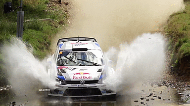
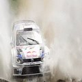
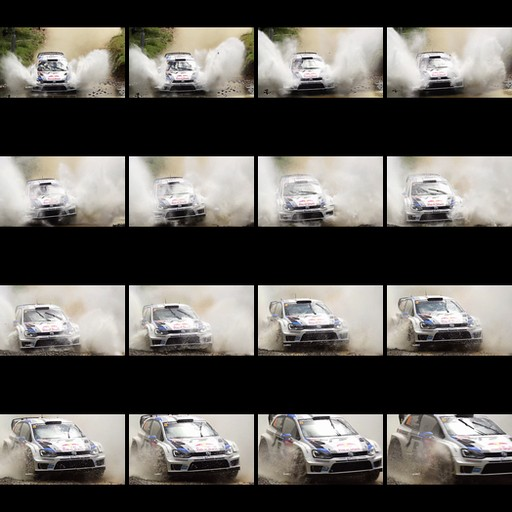

Model Overview
Three architectures compared for GIF accessibility captioning
CNN-LSTM Baseline
SmolVLM-256M Distilled
ViT-GPT2
TGIF Evaluation Metrics
All three models evaluated on TGIF dataset using the same pycocoevalcap (MSCOCO) library, scoring against all human references simultaneously. Baseline and SmolVLM trained on TGIF; ViT-GPT2 is pre-trained on COCO (not fine-tuned for GIFs).
| Metric | CNN-LSTM Baseline (Apoorva, server) |
CNN-LSTM Retrained (ours, browser) |
SmolVLM Distilled | ViT-GPT2 Base |
|---|---|---|---|---|
| BLEU-1BLEU-1 (Bilingual Evaluation Understudy) Measures unigram (single word) precision. Counts how many individual words in the generated caption also appear in the reference. Higher = more word overlap. Precision-based metric. |
0.530 | 0.490 | 0.468 | 0.338 |
| BLEU-2BLEU-2 Measures bigram (2-word phrase) precision. Checks how many consecutive 2-word pairs match between generated and reference captions. Harder to score high on than BLEU-1. |
-- | 0.305 | 0.303 | 0.191 |
| BLEU-3BLEU-3 Measures trigram (3-word phrase) precision. Checks matching 3-word sequences. Scores drop significantly as n increases because exact phrase matches become rarer. |
-- | 0.194 | 0.102 | |
| BLEU-4BLEU-4 Measures 4-gram precision. The standard BLEU score in most NLP papers. Very strict - requires exact 4-word sequences to match. A score of 0.12-0.17 is typical for image captioning. |
-- | 0.129 | 0.058 | |
| ROUGE-LROUGE-L (Recall-Oriented Understudy) Measures the longest common subsequence (LCS) between generated and reference captions. Unlike BLEU (precision), ROUGE focuses on recall - how much of the reference is captured. The "L" variant uses LCS, not n-grams. |
0.390 | 0.345 | 0.316 | |
| METEORMETEOR (Metric for Evaluation of Translation) Goes beyond exact word matching. Uses stemming, synonyms (via WordNet), and paraphrase matching. Computes F1-score combining precision and recall. Better correlated with human judgement than BLEU because it rewards semantic similarity, not just surface overlap. |
0.203 | 0.212 | 0.159 | |
| CIDErCIDEr (Consensus-based Image Description Evaluation) Designed specifically for image captioning. Uses TF-IDF weighting to reward words that are distinctive to a specific image (not generic). Measures cosine similarity of TF-IDF weighted n-grams. Higher scores mean the caption captures image-specific details better. |
0.309 | 0.375 | 0.134 | |
| Eval Samples | 4 x 10K (TGIF) | 9,999 (TGIF) | 10,667 (TGIF) | |
| Scoring Library | pycocoevalcap (MSCOCO) | pycocoevalcap (MSCOCO) | -- | |
| References | Multi-ref (TGIF) | All 3 human refs simultaneously | -- |
Three-Way Comparison
| Metric | Baseline | SmolVLM | ViT-GPT2 | Best |
|---|---|---|---|---|
| BLEU-1 | 0.530 | 0.468 | 0.338 | Baseline |
| ROUGE-L | 0.390 | 0.345 | 0.316 | Baseline |
| METEOR | 0.203 | 0.212 | 0.159 | SmolVLM |
| CIDEr | 0.309 | 0.375 | 0.134 | SmolVLM |
Baseline (TGIF-trained) wins BLEU/ROUGE due to n-gram overlap with TGIF reference style. SmolVLM (TGIF-distilled) wins METEOR/CIDEr - better semantic accuracy and image-specific detail. ViT-GPT2 (COCO-trained, not fine-tuned for GIFs) scores lowest on all metrics - it describes static appearances rather than GIF actions. This motivates the ViT-GPT2 distilled training in progress.
CNN-LSTM Baseline: 4-Fold Evaluation Detail (Table 5.1 from report)
| Test Set | BLEU | ROUGE-L | METEOR | CIDEr |
|---|---|---|---|---|
| First 10K | 0.532 | 0.38 | 0.21 | 0.301 |
| Random 10K | 0.521 | 0.39 | 0.19 | 0.312 |
| Last 10K | 0.536 | 0.39 | 0.20 | 0.315 |
| Largest 10K | 0.531 | 0.40 | 0.21 | 0.309 |
| Average | 0.530 | 0.390 | 0.203 | 0.309 |
Metric Comparison: All Three Models (MSCOCO scoring on TGIF)
Page Refresh to Accessibility Ready
The metric that matters most: how long does a user wait from page load until all GIFs have accessible captions?
Total Time: Page Load to All GIFs Accessible (10 GIFs)
CNN-LSTM Baseline
SmolVLM-256M
ViT-GPT2
Per-GIF Inference Time
CNN-LSTM Retrained
SmolVLM-256M
ViT-GPT2
ViT-GPT2 Timing Breakdown (10-GIF benchmark)
| Phase | Time | Notes |
|---|---|---|
| Frame Extraction (avg) | 4,628 ms | 4 frames per GIF |
| Inference (avg) | 13,057 ms | 4 frames x ~3,264 ms each |
| Per-frame Inference | 3,264 ms | Single ViT-GPT2 forward pass |
| All 10 GIFs Accessible | ~13,300 ms | Parallel processing (excl. model load) |
| One-time costs (first visit only): Model download & init: 22,063 ms | OCR (Tesseract.js) init: 227 ms. These are cached after first load and do not recur on subsequent page navigations. | ||
SmolVLM-256M Extension Timing Breakdown
| Phase | Time | Notes |
|---|---|---|
| GIF Detection | Content script | MutationObserver detects GIF images on page |
| Frame Extraction | In-browser | 16 frames via gifuct-js (not ffmpeg) |
| Grid Construction | In-browser | 4x4 grid, 128px cells, 512px final JPEG |
| OCR (parallel) | In-browser | Tesseract.js on 2 frames (first + mid), pre-cached |
| Grid Construction | 3,068 ms | 16 frames → 4x4 grid (512x512 JPEG) |
| VLM Inference | 9,172 ms | Single forward pass on grid image (WebGPU fp16) |
| OCR (parallel) | Included | Tesseract.js on 2 frames, runs parallel with VLM |
| All 10 GIFs Accessible | ~113,600 ms | Sequential processing (excl. 13.1s model load) |
|
Key advantage: Single VLM call per GIF (16-frame grid as one image) vs ViT-GPT2's 4 separate per-frame calls.
Key disadvantage: Sequential processing (ONNX session lock) means 10 GIFs take ~10x single-GIF time.
One-time costs: Model download & init: 13,093 ms | OCR (Tesseract.js) init: 492 ms. Cached after first load. Hardware: Intel Iris Xe Graphics (WebGPU fp16). Avg over 4 benchmark runs, 40 GIFs total. | ||
Processing Pipeline: How Each Model Analyzes a GIF
Same GIF processed through each model's pipeline, showing frame extraction, model input, and output.
CNN-LSTM Baseline - Previous Research (server-side)

(24 frames)

224x224 each
1280-dim per frame
Extraction
+ Attention
16 steps sequential
Encoding
from sequence
SmolVLM-256M Distilled - In-browser (WebGPU/WASM)
(24 frames)

512x512 single image
+ LoRA adapter
1 forward pass
Model
from grid
ViT-GPT2 - In-browser (WebGPU)
(24 frames)
224x224 each
4 separate calls
~3.3s each
Captioning
captions
weighted selection
+ detail append
Merge
caption
Extension Architecture Comparison
| Aspect | CNN-LSTM Baseline | SmolVLM Extension | ViT-GPT2 Extension |
|---|---|---|---|
| Inference Location | Azure Cloud (server) | Browser (WebGPU/WASM) | Browser (WebGPU) |
| Frames per GIF | 16 | 16 (4x4 grid) | 4 |
| Model Calls per GIF | 1 (API call) | 1 (single grid image) | 4 (per-frame) |
| Frame Extraction | ffmpeg (server) | gifuct-js (browser) | ImageDecoder API |
| Temporal Understanding | BiLSTM sequence | Spatial grid layout | None (per-frame) |
| Summarization | LSTM decoder | VLM generates directly | Weighted selection algorithm |
| OCR | Google Cloud Vision | Tesseract.js (parallel) | Tesseract.js (parallel) |
| Network Required | Yes (API server) | No (fully offline) | No (fully offline) |
| Model Format | PyTorch (.pt) | ONNX (fp16/q4/q8) | ONNX (fp32) |
| Fine-tuned for GIFs | Yes (TGIF) | Yes (TGIF, LoRA) | No (COCO static) |
Training Details
Side-by-side training configurations for both trained models
CNN-LSTM Baseline Training
Model Architecture
Training Configuration
SmolVLM-256M Distilled Training
Training Configuration
Training Results
Training Comparison at a Glance
| Aspect | CNN-LSTM Baseline | SmolVLM-256M |
|---|---|---|
| Approach | Train from scratch | LoRA fine-tune pretrained |
| Training Data | ~90K GIFs (TGIF) | 33,919 GIFs (TGIF) |
| Training Time | ~6 days | 5.5 hours |
| Hardware | Azure VM (CPU only) | NVIDIA A100 GPU |
| Epochs | 10 | 3 |
| Optimizer | SGD | AdamW (cosine schedule) |
| Trainable Params | All (full training) | 1.36M / 256M (0.53%) |
SmolVLM Training & Validation Loss
Learning Rate Schedule
Side-by-Side GIF Examples
Same GIFs captioned by all three models. Pipeline: download GIF, extract frames, run inference, summarize. Baseline uses 16 frames + BiLSTM. ViT-GPT2 uses 4 frames + per-frame captioning + summarization. SmolVLM uses 4-frame grid + LoRA adapter (Patricijia/smolvlm-gif-descriptor).


Deployment & Engineering Trade-offs
A key finding of this research: model quality and browser deployability are often at odds. The best-performing model cannot run in the browser due to ONNX conversion limitations.
The ONNX Conversion Gap
| Model | Caption Quality | ONNX Export | Browser (WebGPU) | Status |
|---|---|---|---|---|
| CNN-LSTM Baseline | Good (action-focused) | N/A (server-side) | No (requires API server) | Working (Azure) |
| SmolVLM Distilled | Best (short, accurate) | Blocked (Idefics3 unsupported) | Not possible currently | Python only |
| ViT-GPT2 (base) | Poor (static descriptions) | Fully supported | Working (WebGPU) | Deployed |
| ViT-GPT2 Distilled | Expected: Good | Fully supported | Will work | Training in progress |
Why SmolVLM Cannot Run in the Browser
SmolVLM uses the Idefics3 architecture which is not supported by the ONNX export tools (optimum, torch.onnx.export). The HuggingFace team created the base model's ONNX files using an internal, proprietary conversion script that handles:
- Dynamic shape operations in the vision encoder (
torch.arangewith data-dependent bounds) - Rank-5 tensor inputs (
[batch, num_images, 3, H, W]) that require custom reshaping - Fused/optimized ONNX graph nodes that embed weights directly (cannot be patched)
- KV-cache management with
DynamicCacheincompatible with TorchScript tracing
Multiple attempts were made to convert the fine-tuned model: direct export, ONNX weight patching (value-matching 156 tensors), sub-model extraction as native types (LlamaForCausalLM + SiglipVisionModel), and using the transformers.js conversion script. All failed. A GitHub issue has been filed requesting conversion support. This is an open problem affecting all Idefics3-based fine-tuned models.
Solution: ViT-GPT2 Distilled (In Progress)
To achieve browser deployment with fine-tuned quality, we are training a ViT-GPT2 model distilled from LLaVA using the same teacher data as SmolVLM. The VisionEncoderDecoderModel architecture has full ONNX export support via optimum.
| Aspect | SmolVLM Distilled | ViT-GPT2 Distilled |
|---|---|---|
| Teacher Model | LLaVA | LLaVA (same data) |
| Student Architecture | Idefics3 (SigLIP + LLM) | ViT + GPT-2 |
| Multi-image Understanding | Built-in (native) | Learned from grid data |
| Instruction Following | Yes (chat template) | No (learns style from data) |
| Grid Input | 6 frames, 3x2 | 6 frames, 3x2 (same) |
| ONNX Export | Not possible | One command |
| WebGPU Browser | Blocked | Guaranteed |
| Fine-tuned Quality | Verified (Python) | Training in progress |
This demonstrates a key engineering trade-off: the architecturally superior model (SmolVLM/Idefics3) cannot be deployed in the browser, while a simpler architecture (ViT-GPT2) with the same distillation training data can achieve browser deployment via WebGPU. Knowledge distillation bridges the gap between model quality and deployment feasibility.